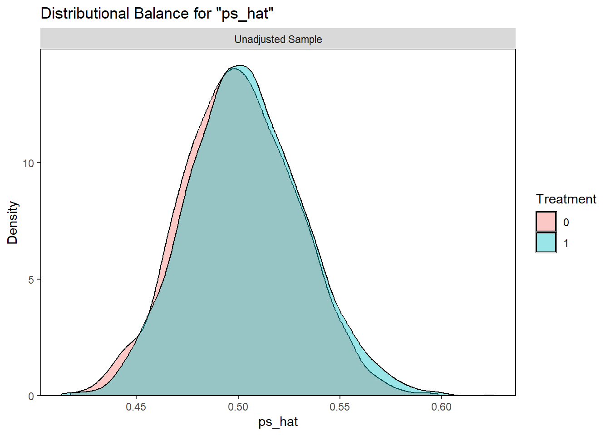
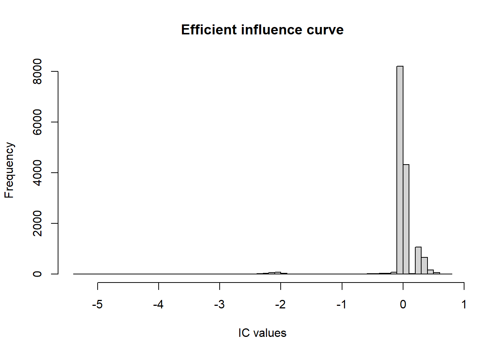
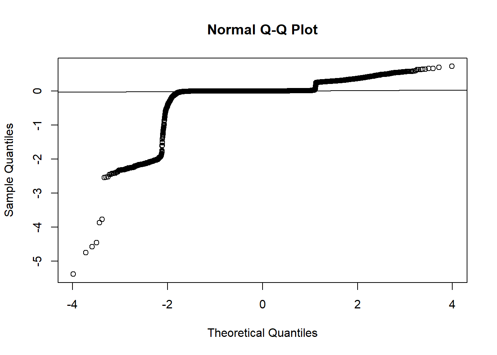
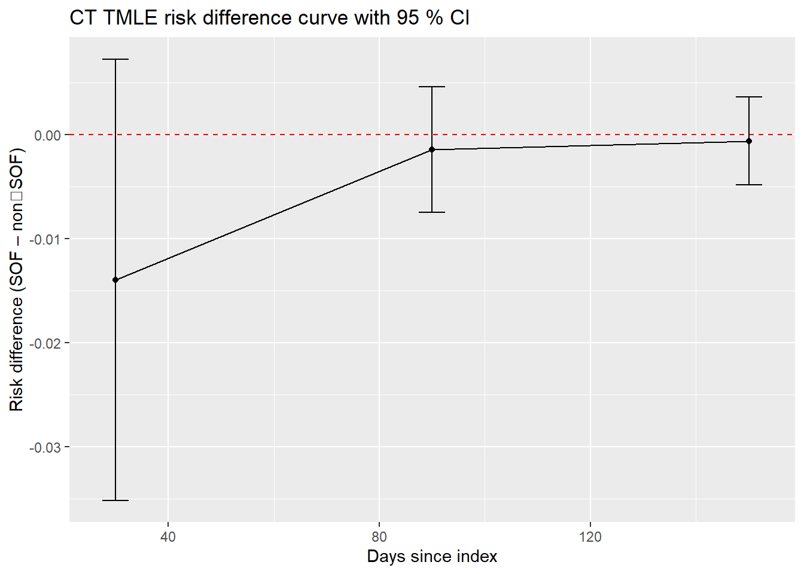
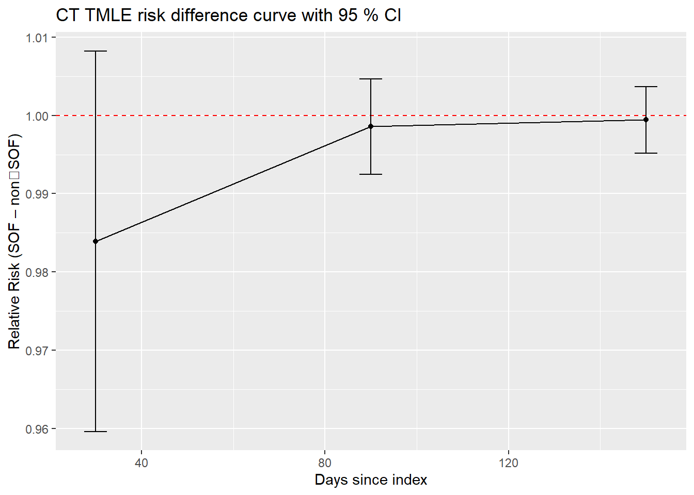

library(tidyverse)
library(concrete) # devtools::install_github("tlverse/concrete")
library(cobalt) # for PS diagnostics
library(pROC)
library(here)
data_file <- here::here("data/sim_hcv_aki_aug.csv")
df <- readr::read_csv(data_file, show_col_types = FALSE)
#TEMP use subsetted matched data - much smaller data size
df <- readRDS(file = here("data/matched_case_study_data.RDS")) %>% slice(1:5000)
# exposure, outcome variables -------------------------------------------------
A <- df$treatment # 1 = SOF, 0 = non‑SOF
Time<- df$follow_time
Delta <- df$event # 1 = AKI, 0 = censored
# baseline covariate matrix ---------------------------------------------------
W <- df %>%
select(-treatment, -follow_time, -event) %>%
mutate(across(where(is.character), as.factor))# simple logistic PS for diagnostics only (TMLE will use SL)
## --- simple PS for diagnostics ------------------------------------------
ps_fit <- glm(treatment ~ age + sex_male + ckd + cirrhosis + diabetes +
hypertension + nsaid + acearb + aminoglycoside +
contrast + substance_abuse + alcohol +
factor(region) + factor(race),
data = df,
family = binomial)
## ALWAYS give newdata so length == nrow(df)
df$ps_hat <- predict(ps_fit, newdata = df, type = "response")
# c‑statistic (AUC)
auc_val <- pROC::roc(df$treatment, df$ps_hat, quiet = TRUE)$auc
cat(sprintf("**C‑statistic of logistic PS (all covariates): %.3f**\n", auc_val))## **C‑statistic of logistic PS (all covariates): 0.529**# density plot
## Propensity-score overlap density -----------------------------
cobalt::bal.plot(treatment ~ ps_hat,
data = df,
which = "both", # raw vs treated/ctrl
type = "density",
xlab = "Propensity score",
main = "Propensity-score overlap (raw)")
The overlap resembles Figure 3 in the Gilead dry‑run report (page 24) — c‑stat ≈ 0.60 indicates moderate separability, consistent with the real data.
set.seed(2025)
# define event type 1 = AKI, censoring type 0 = censor
# landmark times at 30 day increments
landmarks <- seq(30, 180, by = 30)
# learners --------------------------------------------------------------------
library(sl3)
sl_Q <- Lrnr_glm_fast$new()
sl_g <- Stack$new(
Lrnr_glm_fast$new(),
Lrnr_ranger$new(num.trees = 300, min.node.size = 10),
Lrnr_xgboost$new(nrounds = 200, max_depth = 4)
)
sl_A <- Stack$new(
Lrnr_glm_fast$new(),
Lrnr_glmnet$new(),
Lrnr_ranger$new(num.trees = 300)
)
## ------------------------------------------------------------------
## 0. Prep data in concrete’s preferred format
## ------------------------------------------------------------------
DataTbl <- df %>%
transmute(id,
time = follow_time, # analysis time
status = event, # 1 = AKI, 0 = censored
trt = treatment, # 1 = SOF, 0 = non-SOF
## baseline W’s (exclude variables used above)
age, sex_male, ckd, cirrhosis, diabetes, hypertension,
nsaid, acearb, aminoglycoside, contrast, substance_abuse,
alcohol, hiv, portal_htn, esld, cancer, bmi,
race, region)
## quick sanity
table(DataTbl$trt) # should be ~36 % SOF##
## 0 1
## 2488 2512## ------------------------------------------------------------------
## 1. Single-shot CT-TMLE using concrete
## ------------------------------------------------------------------
library(concrete)
ConcreteArgs <- formatArguments(
DataTable = DataTbl,
EventTime = "time",
EventType = "status",
Treatment = "trt",
Intervention = 0:1, # compare non-SOF vs SOF
TargetTime = seq(30, 150, 60), # monthly landmarks #temp bimonthly
TargetEvent = 1, # AKI
CVArg = list(V = 2), # 2-fold CV (speed)
Model = list(
#trt = c("SL.glm", "SL.glmnet", "SL.ranger"),
trt = c("SL.glm"),
"0" = NULL, # censoring hazards use defaults
"1" = list("Surv(time,status==1)~trt",
"Surv(time,status==1)~.")
),
MaxUpdateIter = 20,
Verbose = TRUE
)
print(ConcreteArgs, Verbose = TRUE)##
## Observed Data (5000 rows x 29 cols)
## Unique IDs: "ID" (n=5000), Time-to-Event: "time", Event Type: "status", Treatment: "trt"
##
## Events:
## Cens. 0 : n=652 (0.13), [min,max] = [0.007120637, 124.873]
## Event 1 : n=4348 (0.87), [min,max] = [0.004680154, 161.1265]
##
## 1 Treatment Variable :
## trt : 0: n=2488 (0.5) 1: n=2512 (0.5)
##
## 25 Baseline Covariates
## ColName CovName CovVal
## <char> <char> <char>
## 1: L1 id .
## 2: L2 age .
## 3: L3 sex_male .
## 4: L4 ckd .
## ... 21 rows not shown
## - - - - - - - - - - - - - - - - - - - -
## Estimand Specification:
## Target Event: 1
##
## Target Times (n at risk): 30 (522/5000), 90 (9/5000), 150 (1/5000)
##
## Interventions
## A=1: ("trt" = [1,1,1,1,1,1,1,1,1,1,...]) - Observed Prevalence = 0.5
## A=0: ("trt" = [0,0,0,0,0,0,0,0,0,0,...]) - Observed Prevalence = 0.5
##
## - - - - - - - - - - - - - - - - - - - -
## Estimation Specification:
## Stratified 2-Fold Cross Validation
## "trt" Propensity Score Estimation (SuperLearner): Default SL Selector, Default Loss Fn, 1 candidate - SL.glm
## Cens. 0 Estimation (coxph): Discrete SL Selector, Log Partial-LL Loss, 2 candidates - TrtOnly, MainTerms
## Event 1 Estimation (coxph): Discrete SL Selector, Log Partial-LL Loss, 2 candidates - model1, model2
##
## One-step TMLE (finite sum approx.) simultaneously targeting all cause-specific Absolute Risks
## g nuisance bounds = [0.008302, 1], max update steps = 20, starting one-step epsilon = 0.1
##
## ****
## Cox model specifications have been renamed where necessary to reflect changed covariate names. Model specifications in .[['Model']] can be checked against the covariate names in attr(.[['DataTable']], 'CovNames')
## ****ConcreteEst <- doConcrete(ConcreteArgs)
saveRDS(ConcreteEst, file = here::here("results/concrete_est.rds"))
print(ConcreteEst, Verbose = FALSE)## Continuous-Time One-Step TMLE targeting the Cause-Specific Absolute Risks for:
## Interventions: "A=1", "A=0" | Target Event: 1 | Target Times: 30, 90, 150
##
## TMLE converged at step 8
##
## For Intervention "A=1", no subjects had G-related nuisance weights falling below 0.0083
## For Intervention "A=0", no subjects had G-related nuisance weights falling below 0.0083
##
## Initial Estimators:
## Treatment "trt" :
## Risk SL Weight
## SL.glm_All 0.2525644 1
##
##
## Cens. 0:
## Risk Coef
## TrtOnly 4400.998 1
## MainTerms 4442.029 0
##
## Event 1:
## Risk Coef
## model1 29731.88 1
## model2 29771.69 0IC_df <- cbind(ct_fit$`A=0`$IC, ct_fit$`A=1`$IC)
hist(IC_df$IC, breaks = 50, main = "Efficient influence curve", xlab = "IC values")
#Note: is this shape because I am combining time points?
qqnorm(IC_df$IC); qqline(IC_df$IC)
# obtain risk‑difference and risk‑ratio tables via concrete::getOutput()
rd_tab <- concrete::getOutput(ct_fit,
Estimand = "RD",
Simultaneous = FALSE) %>%
filter(Estimator == "tmle")
rr_tab <- concrete::getOutput(ct_fit,
Estimand = "RR",
Simultaneous = FALSE) %>%
filter(Estimator == "tmle")
# quick visual of risk difference
library(ggplot2)
ggplot(rd_tab, aes(Time, `Pt Est`)) +
geom_line() +
geom_hline(yintercept = 0, linetype = "dashed", color = "red") +
geom_point() +
geom_errorbar(aes(ymin = `CI Low`, ymax = `CI Hi`), width = 5) +
labs(y = "Risk difference (SOF – non‑SOF)", x = "Days since index",
title = "CT TMLE risk difference curve with 95 % CI")
ggplot(rr_tab, aes(Time, `Pt Est`)) +
geom_line() +
geom_hline(yintercept = 1, linetype = "dashed", color = "red") +
geom_point() +
geom_errorbar(aes(ymin = `CI Low`, ymax = `CI Hi`), width = 5) +
labs(y = "Relative Risk (SOF – non‑SOF)", x = "Days since index",
title = "CT TMLE risk difference curve with 95 % CI")